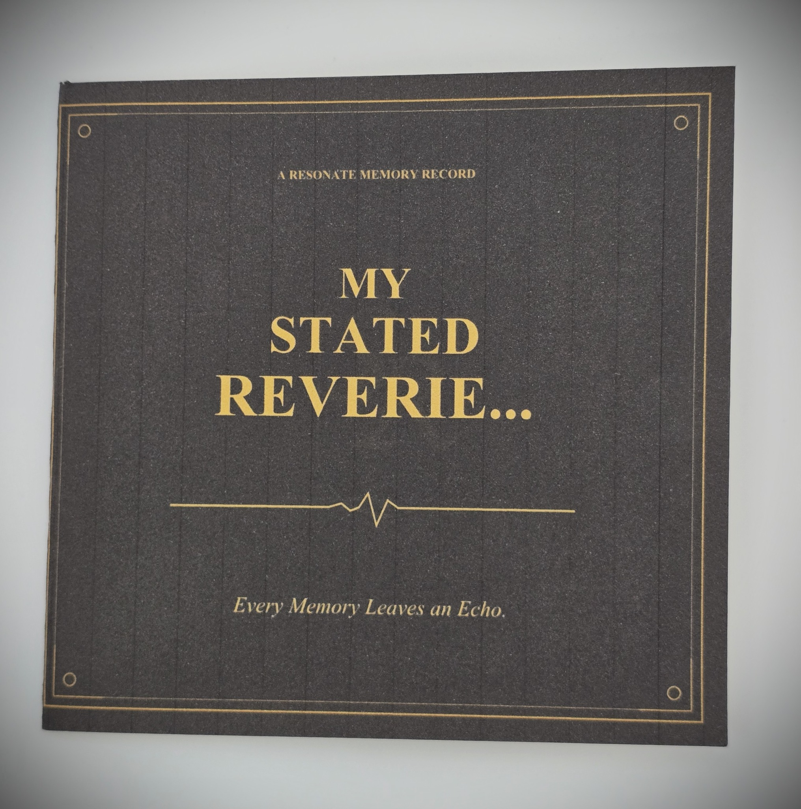
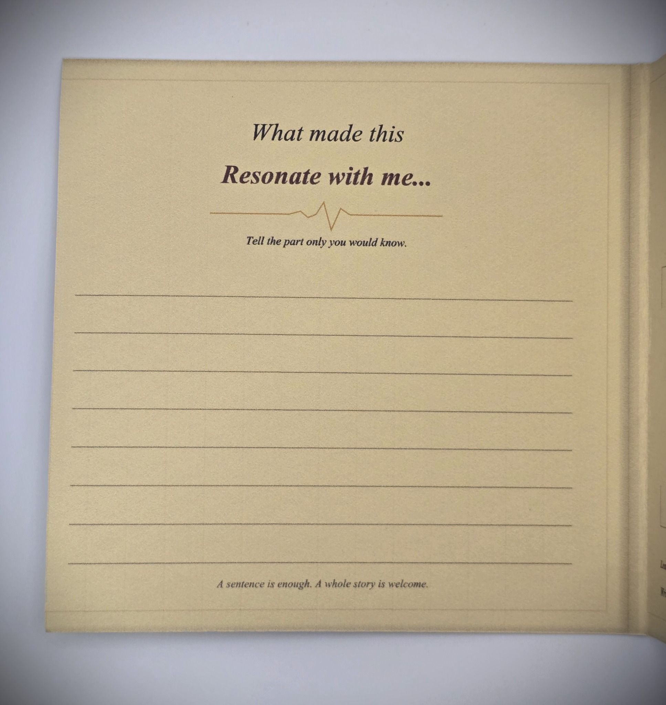
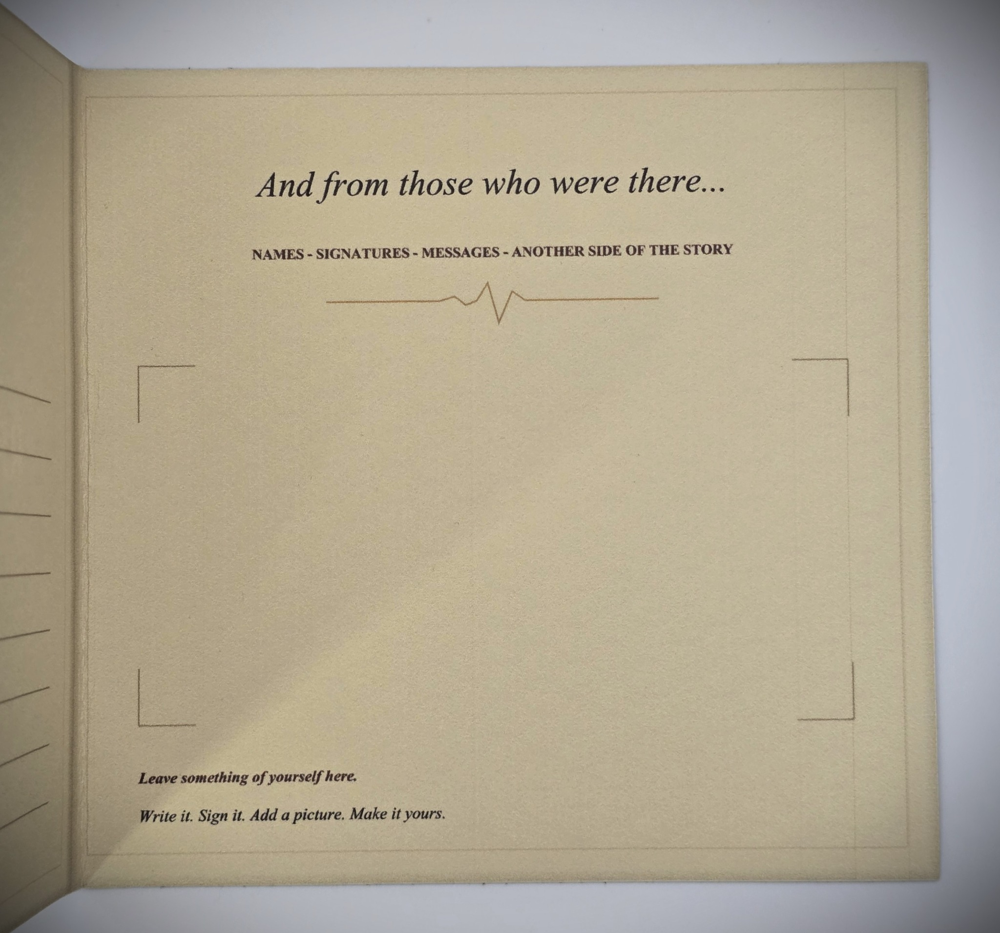
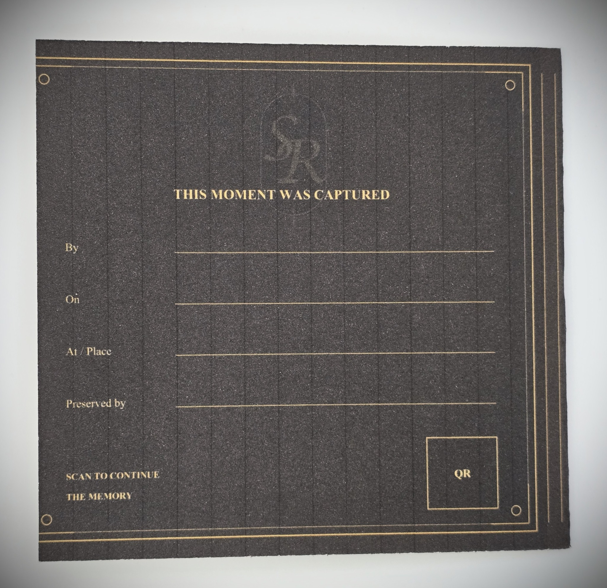

ROOM II / MEMORY KEY INSERTS
The Art of Resonance.
Preserve more than the object. Preserve the reason it mattered.
Enter the Collection
Memory Key Inserts extend the idea beyond music. They are designed around the belief that preserving an object without preserving its meaning leaves part of the story behind.
Each capsule creates a place for the artifact and a place for its context. The prompts are intentionally personal rather than archival or clinical.





Designed to give meaning a place to remain.
CONTINUE THROUGH THE HOUSE
ROOM IV / REVERIE VAULT →